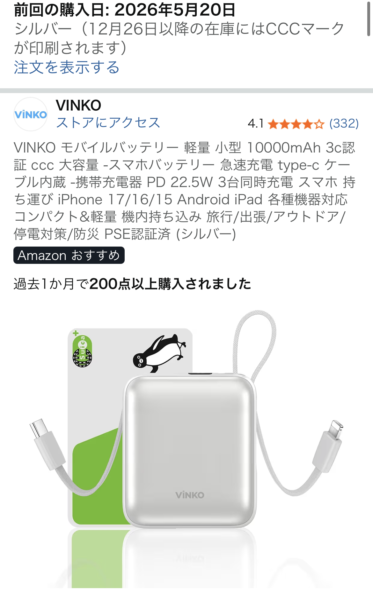

3C認証対応10000mAhモバイルバッテリーを選んだ理由と実際の使い勝手【中国出張用に購入】
中国出張用に「3C認証対応」で「10000mAhクラスでは軽量」なモバイルバッテリーを探し、最終的に本製品を購入しました。大手モバイルバッテリーメーカーの多くがまだ3C認証に対応しておらず、その中で安心して持ち込めるモデルを選びたい人には、かなり有力な選択肢になると感じています。

なぜ3C認証対応が重要だったのか【中国出張という前提】
今回の購入目的は完全に「中国出張で安心して使えるモバイルバッテリー」です。中国では電気製品に対してCCC（3C）認証が求められるケースがあり、空港や荷物検査でのトラブルを避けたい場合、3Cマークの有無は無視できません。
ところが、調べてみると日本でおなじみの大手モバイルバッテリーメーカーは、現時点では3C認証に対応していないモデルが多く、「いつものブランドをそのまま持っていく」という選択が取りづらい状況でした。その中で、本製品はきちんと3C対応をうたっており、仕様表や本体マーキングからも安心感が得られたのが購入の決め手です。
10000mAhクラスでは軽量で、持ち歩きが苦にならない
容量は10000mAhと、スマホ1〜2回分の充電には十分なクラス。そのうえで軽量設計なのが大きなメリットです。中国出張では、ノートPC・変換プラグ・Wi-Fiルーターなど荷物が増えがちなので、モバイルバッテリーまで重いと地味にストレスになります。
本製品は、同容量帯の一般的なモバイルバッテリーと比べても軽く、ジャケットのポケットやショルダーバッグに入れても「ずっしり感」が少ない印象です。長時間の移動や現地での外出時にも、常に持ち歩く前提で選ぶなら、この軽さはかなり効いてきます。
充電スピードより「価格と安心感」を重視した選び方
最近はPD対応・急速充電対応のモバイルバッテリーが増えていますが、今回の用途ではそこまで充電スピードにこだわりはありませんでした。日中にスマホのバッテリーが半分を切ったら、移動中やカフェでつないでおけば十分という使い方です。
その分、重視したのは次の3点です。
- 3C認証対応であること（中国出張での安心感）
- 10000mAhクラスの中で軽量であること
- 価格が手頃で、予備としても買いやすいこと
本製品はこの3つをバランスよく満たしており、「高性能フラッグシップ」というよりは、「出張・旅行用の実用モデル」としてちょうどいい立ち位置だと感じました。特に価格は、3C対応という付加価値を考えるとかなり良心的で、サブのモバイルバッテリーとしてもう1台買っておいてもいいと思えるレベルです。
実際に使って感じたメリット
実際の使用感として、特に良かったポイントをまとめると次のとおりです。
- 出張バッグに入れっぱなしでも気にならない軽さで、常備バッテリーとして優秀
- 10000mAhでスマホをしっかりカバーでき、1日の行動ならほぼ不安なし
- 3C認証対応という安心感があり、空港や荷物検査での心理的ストレスが減る
- 価格が手頃なので、万が一紛失してもダメージが少ない
特に「安心感」と「軽さ」は、スペック表だけでは伝わりにくいものの、実際に出張や旅行で使うと価値を実感しやすいポイントです。海外出張では、現地でのトラブルを減らすことが何より大事なので、こうした“余計な心配を減らしてくれるガジェット”は、結果的に仕事のパフォーマンスにも効いてくると感じました。
注意点と購入前にチェックしておきたいポイント
一方で、購入前に知っておいたほうがいい注意点もあります。
- 超高速充電を求める人には物足りない可能性があること
- 3C認証対応のモデルはまだ選択肢が少ないため、在庫状況が変動しやすいこと
- 大手ブランドの安心感を最優先したい人には、ややマイナーに感じるかもしれないこと
特に、3C対応のモバイルバッテリーはまだ市場に多くなく、「大手メーカーの中から選ぶ」といういつもの感覚で探すと、候補がほとんど出てこないことがあります。中国出張や中国国内での利用を前提にしている場合は、3Cマークの有無を必ず確認しつつ、容量・重量・価格のバランスで比較するのがおすすめです。
中国出張・中国旅行用モバイルバッテリーとして「ちょうどいい一台」
総合的に見ると、本製品は「中国出張・中国旅行で安心して使える、軽量10000mAhモバイルバッテリー」を探している人にとって、かなり“ちょうどいい一台”だと感じました。爆速充電や多ポート出力といった派手な機能はありませんが、3C認証対応・軽量・手頃な価格という3点がしっかりそろっているのは大きな強みです。
大手メーカーのモバイルバッテリーが3C非対応で悩んでいる人や、「とにかく中国出張で安心して使えるモデルが欲しい」という人は、一度チェックしてみる価値は十分にあります。